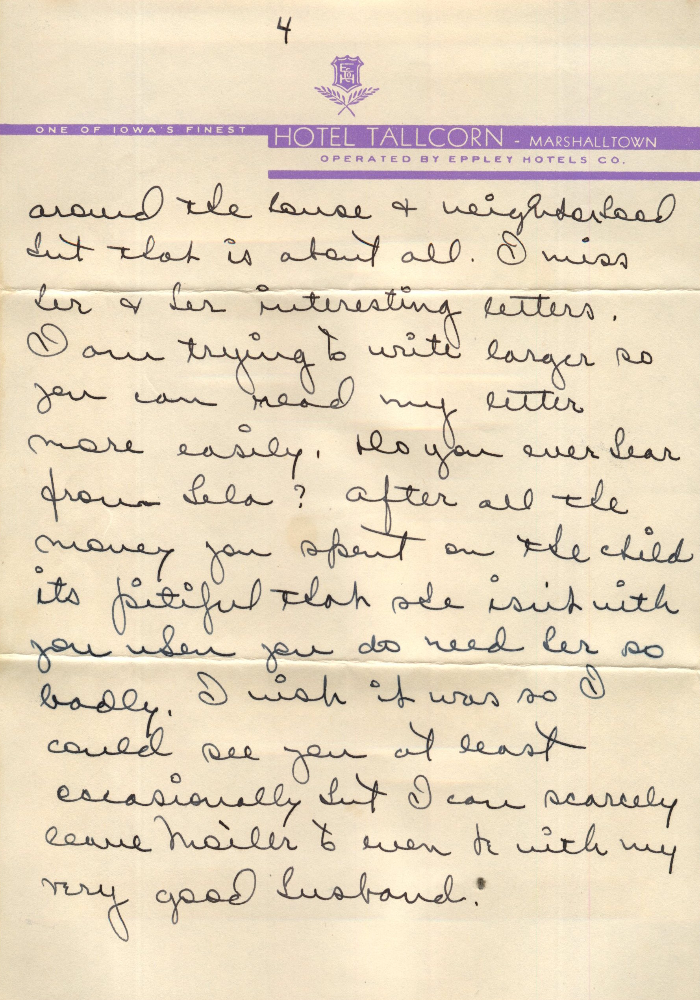
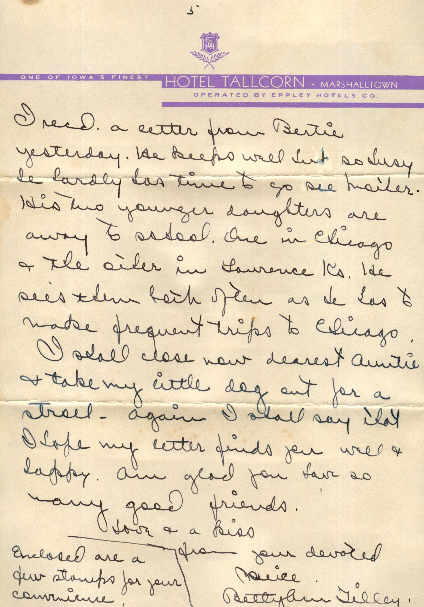
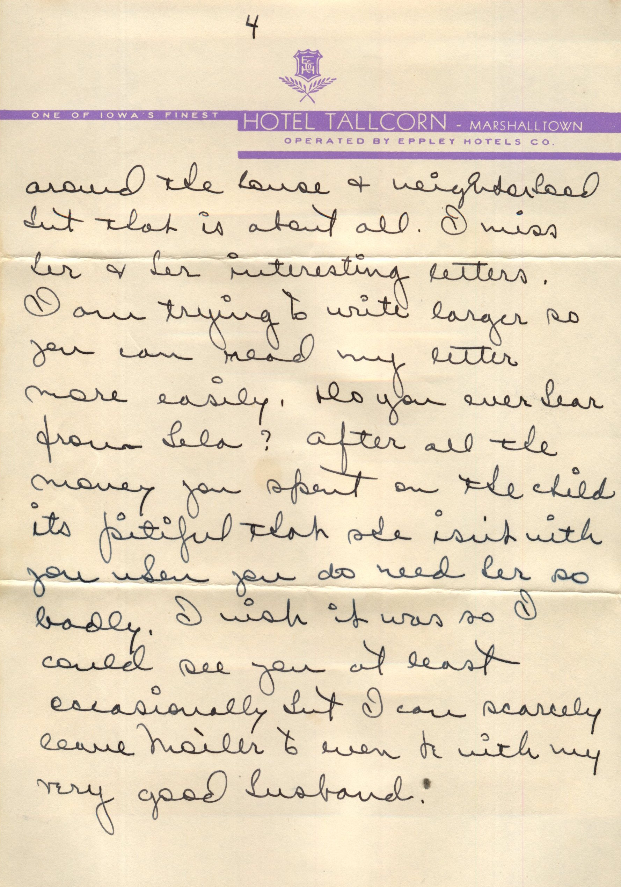
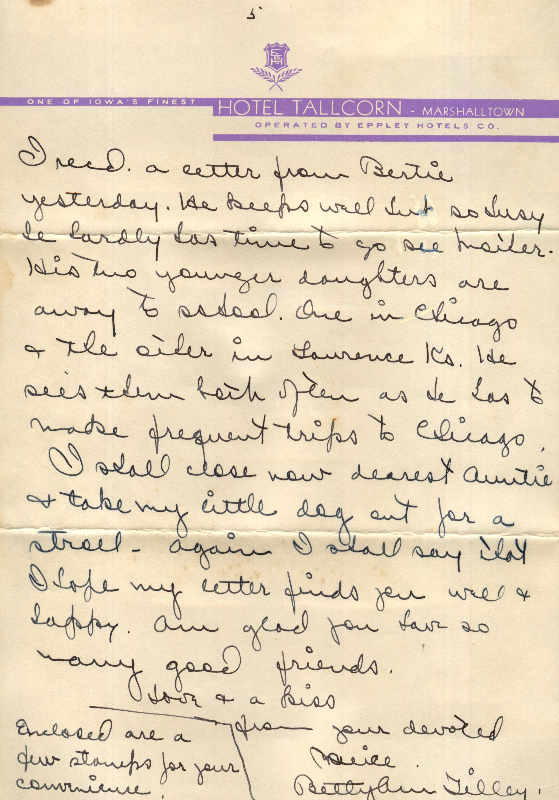

From: Betty Ann Tilley, To: Amelia J. Wiggins
 
From: Betty Ann Tilley, To: Amelia J. Wiggins
Dearest Aunt Millie, I have been away from home over a month as Harold had his vacation and we spent most of the time at his home in Catarissa Penna. We drove thru and even though it was twelve hundred miles it seemed like no trip at all. Your card was forwarded to me and as always I was glad to hear from you. I had hoped to get an apt. here but we have a vacancy in one of the apts. at some and besides mother is not at all well so tomorrow Harold is taking me to Topeka and at Xmas he will come to be with us. If at all possible I shall return here at that time with him. It is very difficult for me to leave mother at all and we can not always arrange to have her with us as it is not possible for her to have her comforts any place like at "Home Sweet Home." I do hope darling you are well and have things comfortable. To be in a warm home is a lot to be thankful for, so many poor people suffer in cold weather. Speaking of weather, ever have we had such a fall even now winter has not arrived and its nearing Xmas. My little dog is sitting on the window sill looking down on the street, guess she thinks she is directing traffic as she growls when ever a dog passes or anything else she doesn't like the looks of. Aunt Millie have you tried during the past few years to get glasses? Maybe you need new ones. It's a shame for you not to have them if you could see better. Poor mother nothing helps her any, neither the operation nor glasses and it make me very sad. She still sees enough to get around the house and neighborhood but that is about all. I miss her and her interesting letters. I am trying to write larger so you can read my letter more easily. Do you ever hear from Lela? After all the money you spent on the child its pitiful that she isn't with you when you do need her so badly. I wish it was so I could see you at least occasionally but I can scarcely leave mother to even be with my very good husband. I received a letter from Bertie yesterday. He keeps well but so busy he hardly has time to go see mother. His two younger daughters are away to school. One in Chicago and the other in Lawrence, Ks. He sees them both often as he has to make frequent trips to Chicago. I shall close now dearest Auntie and take my little dog out for a stroll. Again I shall say that I hope my letter finds you well and happy. Am glad you have so many good friends. Love and a kiss, Your devoted niece, Betty Ann Tilley Enclosed are a few stamps for your convenience.